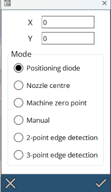
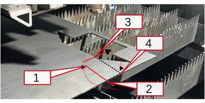
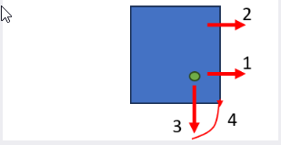

Décalages de travail
La machine peut déterminer le décalage de travail de plusieurs façons.

Diode de position
La façon la plus courante consiste à déplacer le pointeur laser vert à la position souhaitée, puis à appuyer sur le bouton Régler. La machine utilise ce point comme décalage de travail.
Centre de la buse
Cette option peut être particulièrement utile lorsque la machine a déjà positionné la buse au point zéro. La machine utilise le centre de la buse comme décalage de travail.
Manuel
Dans les opérations spéciales ou si vous travaillez avec des gabarits, cette option vous offre la possibilité de régler le décalage de travail manuellement.
Détection des arêtes 2 points
Cette option est utile lorsque vous devez définir le décalage de travail sur le bord de la matière. La machine vous demandera de déplacer la buse jusqu’au premier point, puis détermine automatiquement le coin de la tôle. Cette fonction est rapide et permet de placer des petites pièces dans un coin de la tôle.
| La précision de la stratégie en 2 points est limitée par la précision de la machine et ne doit donc pas être utilisée sur une tôle à découper entièrement. |
La logique fonctionne comme suit :

-
Vous sélectionnez avec le laser une position proche de la position nulle souhaitée.
-
La machine effectue une recherche de coin dans la direction X à partir de la position où vous avez démarré.
-
La machine effectue une recherche de coin au centre le plus proche entre deux barres supports. Cela maximisera la précision de la mesure de coin.
-
La machine va au coin qu’elle a trouvé et coupe la pièce après confirmation.
Détection des arêtes 3 points
La méthode à 3 points est beaucoup plus précise et prend 3 points de mesure sur une tôle complète. Elle suppose qu’une tôle entière (>1000x2000) se trouve sur la table et effectue trois recherches d’angle à x300, x1500 et y300 pour trouver l’origine. Il s’agit de la méthode préférée pour couper une tôle complète.

| Si la détection des arêtes est effectuée par-dessus une barre support, elle produira des résultats inexacts. Par conséquent, la machine choisit automatiquement une position entre deux barres supports. |
| Avant d’appliquer la détection des arêtes à trois points dans la machine laser, le format de tôle doit être spécifié dans le logiciel Flux. Assurez-vous que le format de tôle spécifié dans le programme correspond à la tôle actuellement chargée dans la machine. Assurez-vous que la diode pilote est placée dans le coin de la tôle |

En sélectionnant la détection des arêtes 3 points dans le menu de décalage de travail, les opérations suivantes sont effectuées :
-
Tout d’abord, la tête de coupe se déplace vers la diode pilote à la position (0,0) sur le bord de la tôle.
-
La tête de coupe se déplace vers cette position pour trouver le premier bord de la tôle.
-
Après avoir détecté le premier bord, la tête de coupe se déplace ensuite vers la seconde position pour trouver le deuxième bord de la tôle.
-
Après avoir détecté le deuxième bord, la tête de coupe trouve le troisième bord de la tôle (pour trouver la cote de pente ascendante de la tôle).
-
Lors de la confirmation, la position de la tête se déplace automatiquement à la position de départ et exécute le processus de coupe.